Gün gün plan
Etkinlikleri gününe ve saatine yerleştir, sürükleyip yeniden sırala.
Seyahat öncesi, sırası ve sonrası için ihtiyacın olan her şey tek uygulamada.
Etkinlikleri gününe ve saatine yerleştir, sürükleyip yeniden sırala.
Kayıtlı yerleri ve günün rotasını haritada gör, tek dokunuşla yol tarifi al.
Şehrin anlık havası ve seyahatin her günü için tahmin.
Hava, süre ve plana göre öneriler; görevler ve bavul şablonları.
Farklı dövizle gir, seyahatin para birimine otomatik çevrilsin.
Kategori dağılımı, günlük harcama ve bütçe uyarıları.
Kimin ne ödediğini gir, kimin kime ne kadar borçlu olduğunu gör.
Arkadaşlarını davet koduyla ekle, düzenleyici ya da görüntüleyici yap.
Birkaç soruyu yanıtla, gün gün rota önerisi hazır olsun.
Hazır seyahat planlarını incele, tek dokunuşla kendi seyahatine ekle.
Bilet, rezervasyon ve fotoğrafları seyahate ekle; internetsiz aç.
Hazırlık ve günün planı hatırlatmaları; tüm verini tek dosyaya yedekle.
Plan
Uçuş, otel girişi, gezi ve akşam yemeği. Her etkinliği gününe yerleştir, kayıtlı yerlerle eşleştir; seyahat sırasında “Bugün” kartı sıradakini gösterir.
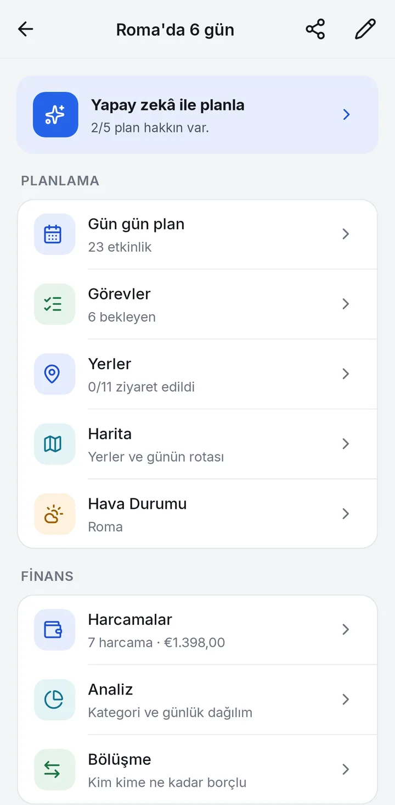
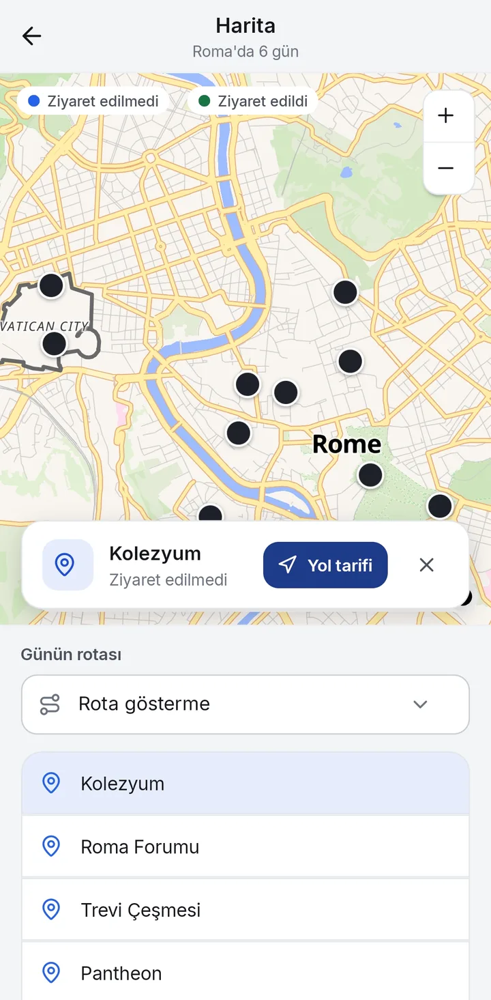
Bütçe
Seyahat bütçeni belirle, harcamalarını gir. Ne kadar harcadığını, ne kadar kaldığını ve arkadaşlarınla hesabın nasıl kapanacağını uygulama hesaplasın.
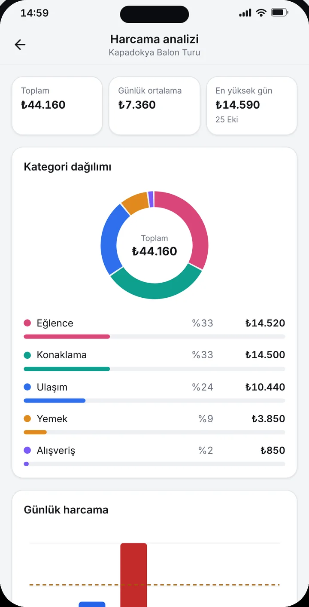
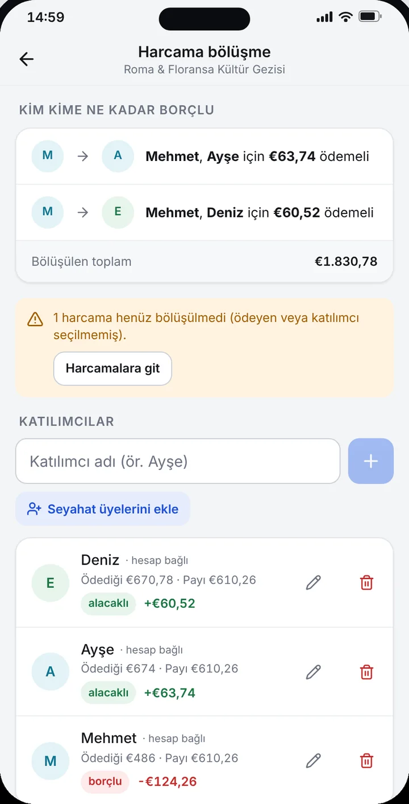
Yapay zekâ ve Keşfet
İlgi alanını, temponu ve bütçeni seç; yapay zekâ gün gün bir rota önersin. Önerilen yerler haritada doğrulanır, istediklerini seçip planına eklersin. Ya da Keşfet’teki hazır planlardan birini kendi seyahatine dönüştür.
Yapay zekâ önerileri hatalı olabilir. Ayrıntılar: Yapay Zekâ Feragatnamesi.
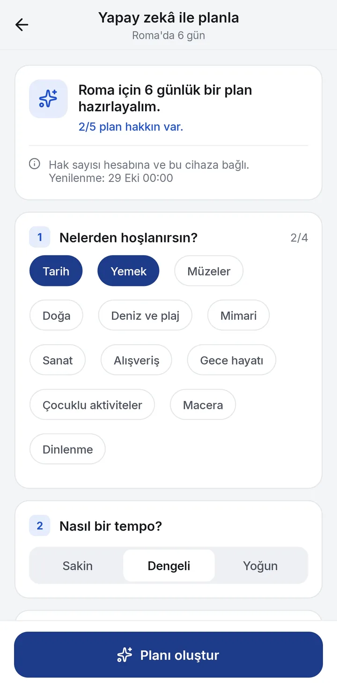
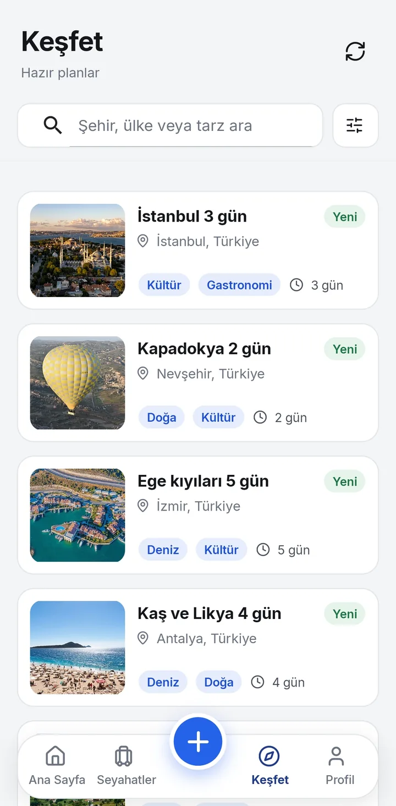
Ekranlar
Sade, okunaklı ekranlar. Açık ve koyu temada aynı netlik.
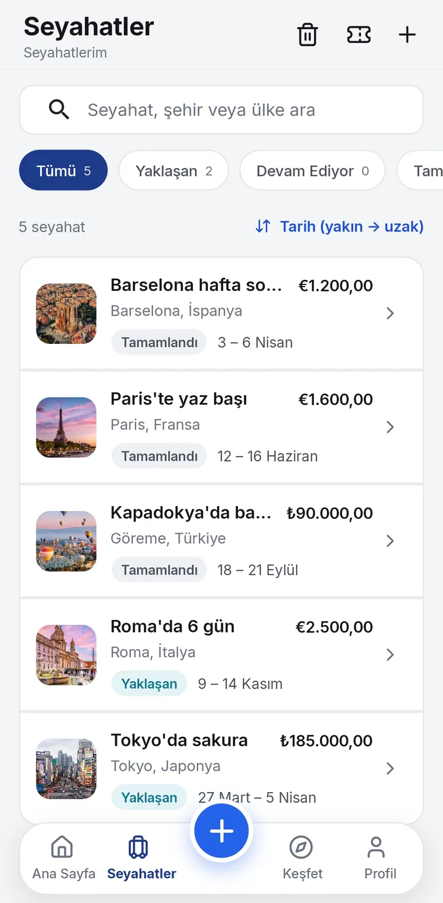
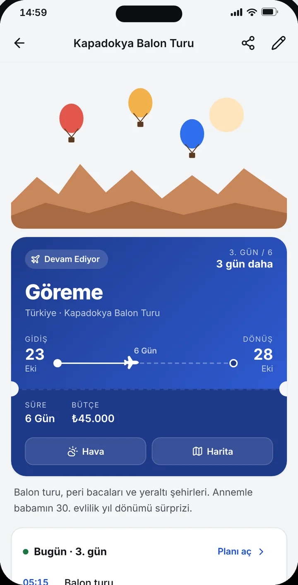
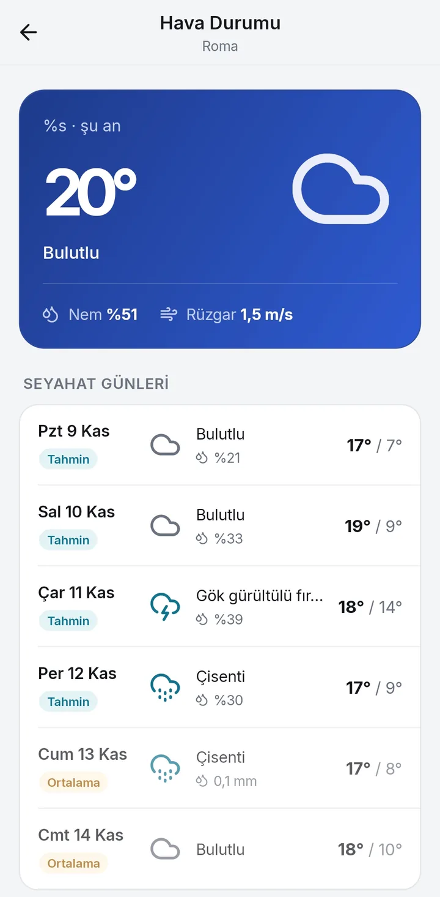
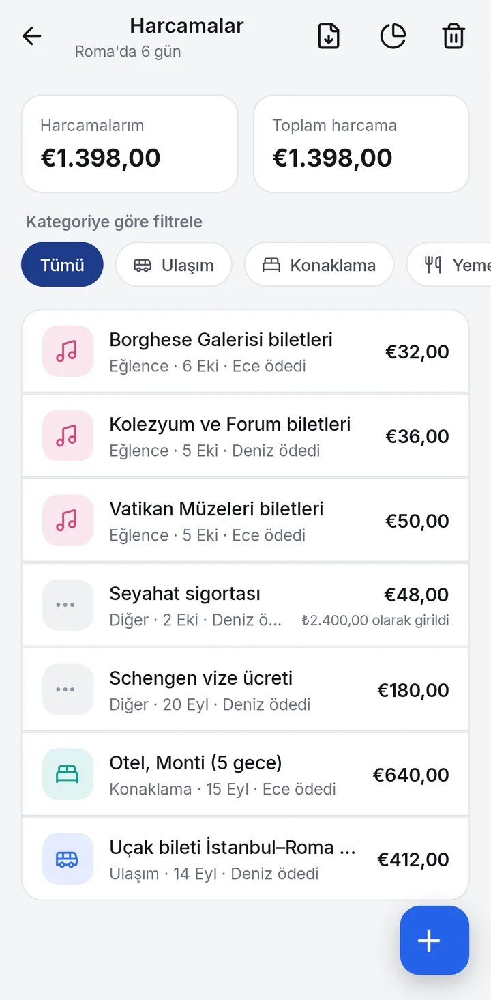
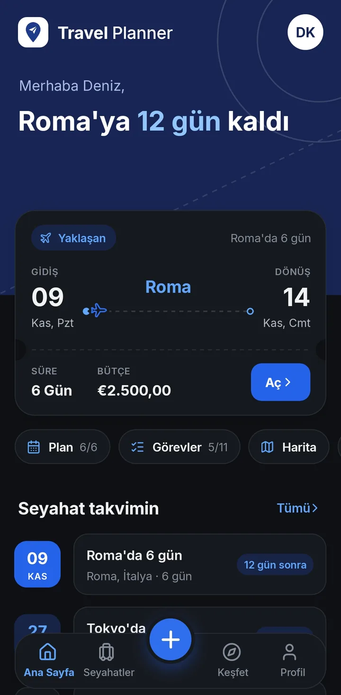
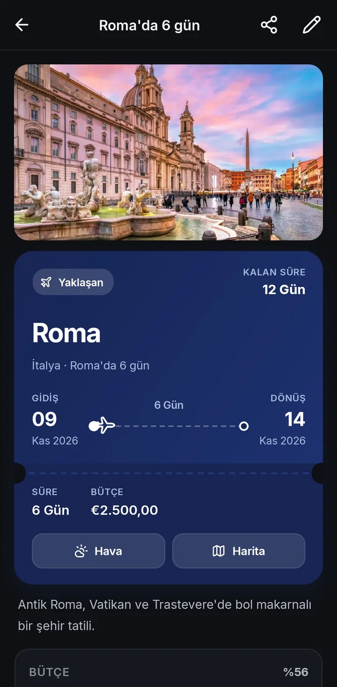
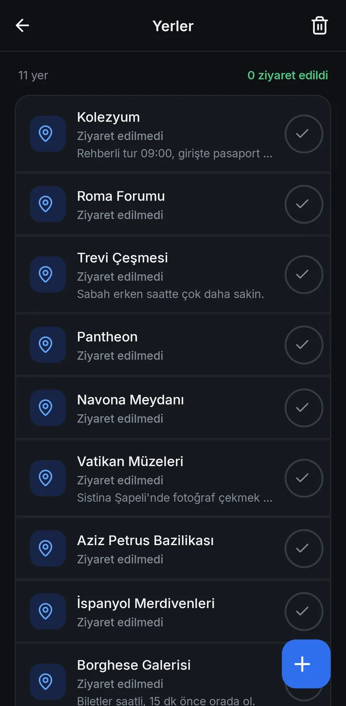
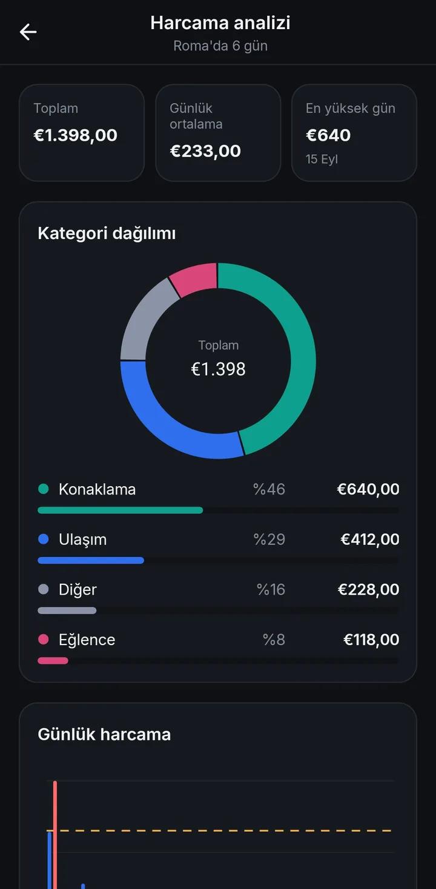
Ücretsiz, reklamsız ve hesap açmadan kullanılabilir.